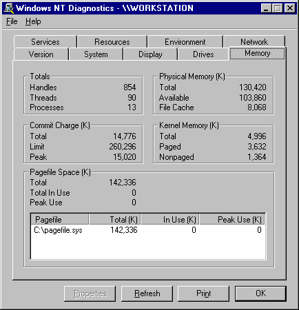
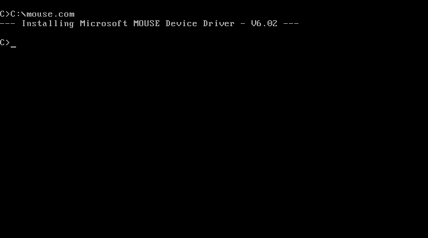
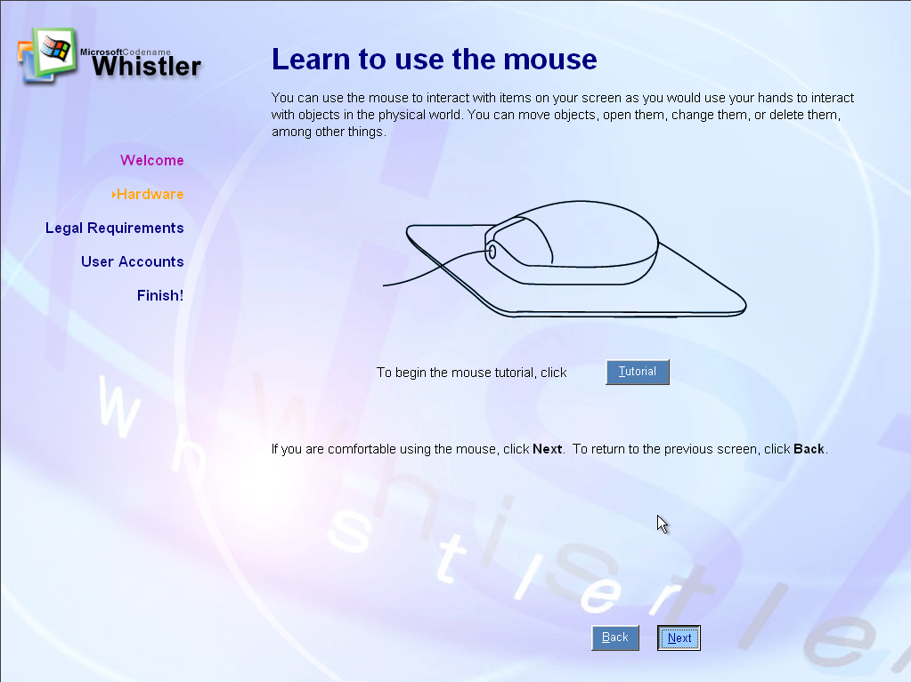
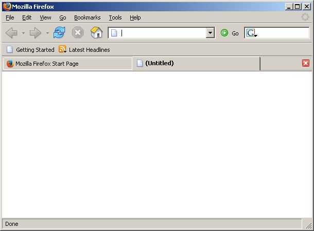
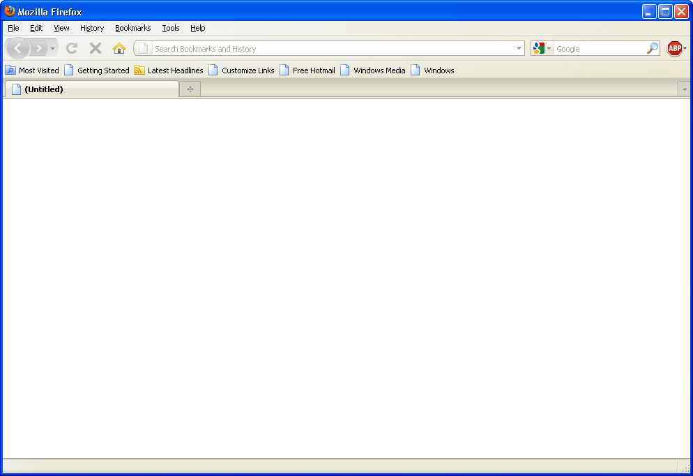
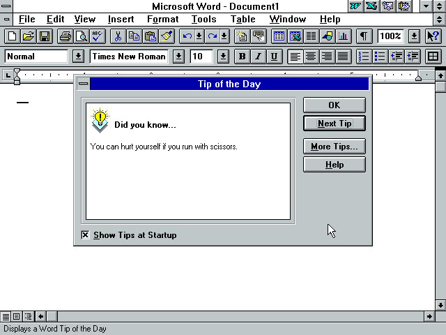
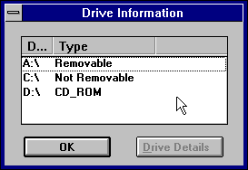

“One of my more elderly customers gave me this because he `knows that I love technology.`” — http://imgur.com/gallery/g5UCAeA
I want that so bad.
“One of my more elderly customers gave me this because he `knows that I love technology.`” — http://imgur.com/gallery/g5UCAeA
I want that so bad.

Today (November 19th, 2014) marks the 1-year anniversary of my first post, so I’m assuming that it’s been a year since I’ve started this blog. As such, I thought I’d make a short follow forever, since I’ve never made one before.
I’m not following an awful lot of blogs on Tumblr (~100 or so), so this list is only 14 blogs. Blogs in italics don’t normally post things related to what I post here, but I’m including them anyway.
80stechnology | 98nt | aleclikesmacintosh | antechquarian | compuporn | dinosaurspen | floppy-diskette | idollia | komaedas | scientificsatellite | screenshotsofdespair | tsukiyamas | windowshighasfuck | wwwtxt
That’s pretty much it.



If you’re beta testing an operating system, you should already know how to use the mouse. Especially considering that this is from 2000.

0.1

1.0

2.0

3.0

3.6.23

4.0
12.0
17.0

24.0
30.0
Versions of Mozilla Firefox, as requested by superwholocked-carcinogeneticist
Two versions used have add-ons installed (Adblock Plus and Personas.)
Once the rapid release cycle hit, I just selected a few versions from version 4 to 30. Those versions were 4, 12, 17, 24, and 30. I threw in a couple of operating systems other than Windows as well, since the UI looked similar from one release to the next.
Versions 17 and 24 were extended support releases, 30 is the current release, and 12 was the latest Windows 2000 (which I used for most of these) could run.
Version numbers are in the captions.




